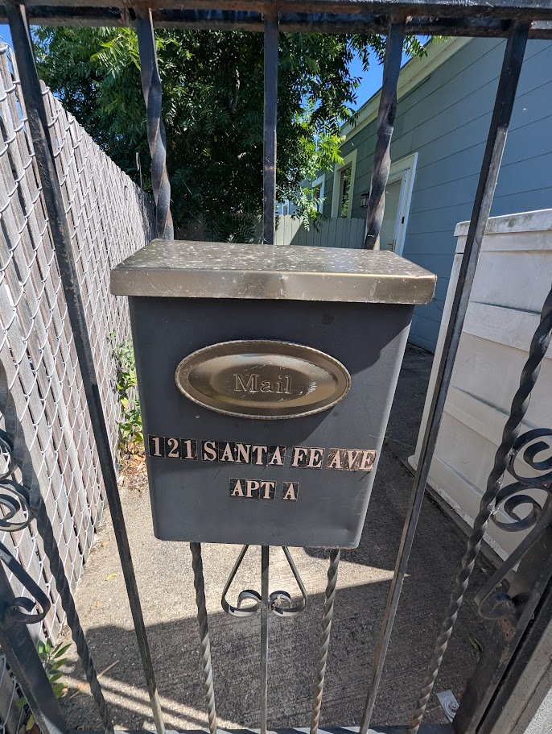
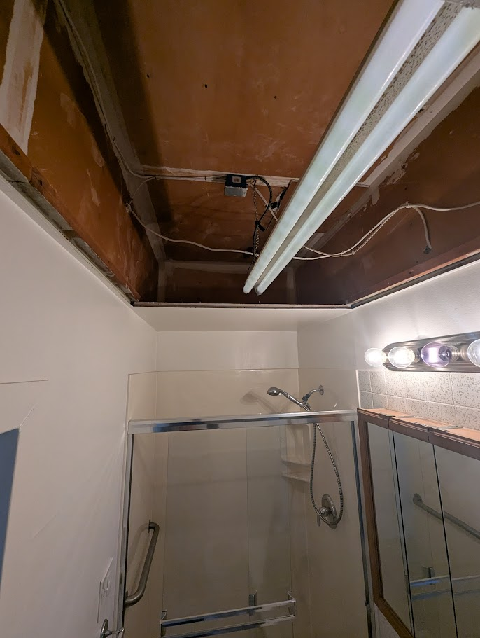
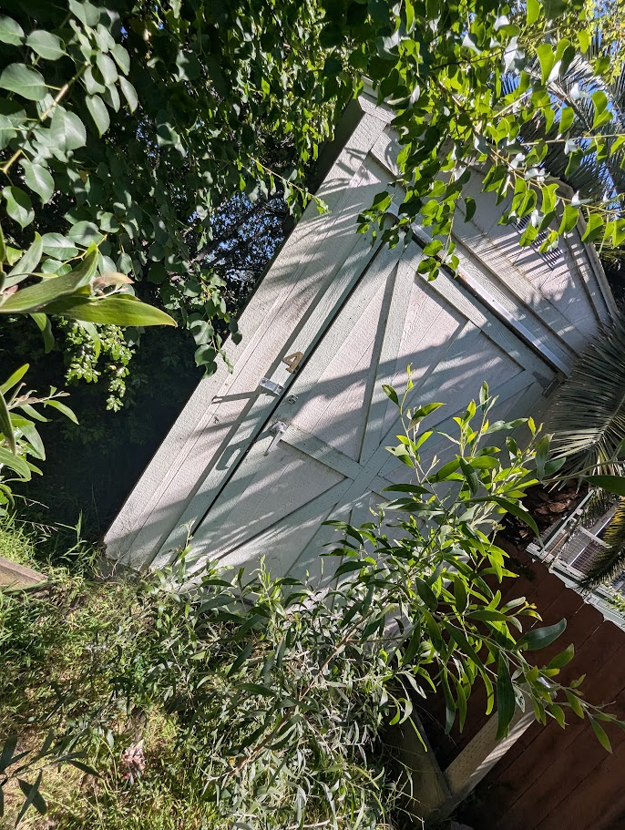
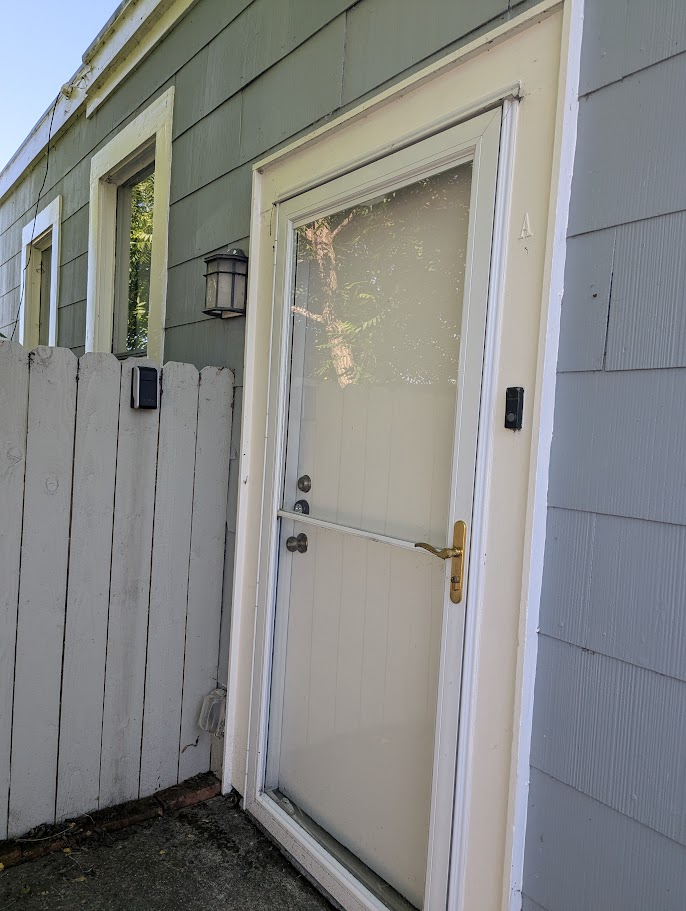

Tech Auditor Goes Deep · AI in the Real World
I Walked Through a Vacant Rental With My Phone. My AI Drafted the Contractor Texts Before I Got Home.
How an MCP memory server turns sloppy voice notes and phone photos into organized action — and what that means for anyone with a project, a property, or just too much to remember.
Saturday morning. Vacant unit. I'm standing in a one-bedroom apartment that my tenant just moved out of after several years, and the mental list is already overwhelming. Brown laminate cabinets from a decade past their prime. A bathroom ceiling with an open drop-panel frame and exposed wiring. Four backyard sheds in varying states of collapse. Overgrown vegetation pressing against the siding. A drainage channel clogged with weeds that nobody will remember to clear before the rains come.
Two people are waiting to hear from me. A handyman who will be starting the renovation work, and a gardener who will handle the exterior. Neither of them uses email. Both prefer short texts.
The old version of this day ends with a half-remembered list, a few blurry photos, and a text I write at midnight that makes no sense to anyone receiving it. The new version is what I want to tell you about.

What Actually Happened
I walked the property with my phone, room by room, dictating observations to Claude as I went. Not structured, not organized — just talking. "The bathroom ceiling has exposed wiring and an open exhaust duct frame, that needs to be closed in before anything cosmetic happens in there..." I uploaded a photo of the collapsed shed. Claude looked at it, described what it saw, and asked me one question: is this a must-fix or an assess-first situation?
That one question changed the quality of everything that followed. Instead of a flat undifferentiated list of seventy-five things I noticed, the session ended with a sorted punch list: must-do items, strong candidates, and things to assess before deciding. Room by room. Logged to my MCP memory database in real time, tagged and retrievable from any future conversation.


Then I asked for the thing I hadn't expected to need: "Draft a text to my handyman. He prefers short messages. Include only the must-do interior items for Unit A."
It worked. Not approximately — it actually worked. Clean, prioritized, ready to send. I did the same for the gardener, and here's where it got interesting: I didn't have to remember to tell Claude that the gardener tends to skip the far back of the property and the curb strip out front. It was already in my notes from a previous session. The draft text included those reminders specifically, without me asking. That's not a notes app. That's memory working the way memory is supposed to work.

The Moment Claude Talked Me Out of Something
Standing in the kitchen — dropped ceiling, brown laminate, fluorescent box fixture that makes everything feel like a 1987 break room — I started thinking out loud about a bigger idea. What if we demoed the whole thing? Relocated the kitchen. Opened the walls. The apartment has an unusual railroad-car layout with rooms that flow into each other awkwardly, and I've always thought a proper redesign could make it feel like a different place entirely. There's even an architecture firm one block away that works directly with city planners.
Claude didn't just log the idea. It pushed back.
There are really two renovation paths in front of you. Path A is cosmetic-plus: new kitchen cabinets and counters, new floors throughout, replace the aluminum windows, update the lighting, fix the bathroom ceiling, paint everything. You get to $20k–$30k, the unit photographs well, and you lease it at $2,200–$2,500. Done in six to eight weeks. Path B is structural: open walls, potentially relocate the kitchen, combine the bedroom and office, raise the dropped ceilings. You're looking at permits, an architect, four to six months minimum, and easily $60k–$100k or more. Your rent might reach $2,800–$3,000 if the result is exceptional — but the return math gets very thin. My honest recommendation: do Path A now, get a tenant in, and treat the architectural consultation as a planning exercise for a future renovation cycle.
I've owned rental properties since 1999. I know this feeling — the pull toward the grand scope, the redesign that's going to finally make everything right. I also know it's usually a mistake. What I didn't expect was for my AI to be the one to say so, clearly, with the math laid out.
A notes app stores what you tell it. This pushed back on what I was telling it.
What's Actually Going On
The system I use has three layers. It sounds complicated but the mental model is simple once you see it:
The MCP layer is the one most people haven't heard of yet. MCP stands for Model Context Protocol — an open standard that lets Claude connect to external data sources and tools. In this case, it connects Claude to a Supabase database that I own and control. Every thought I log is mine. It lives in my database, retrieved on demand. It's not going to a third-party training dataset.
Some people call this an Open Brain. Some call it a 2nd Brain. I've started thinking of it less poetically: it's an MCP memory server. That's what it is.
Prompts Worth Trying
If you already have a 2nd Brain or MCP memory setup running, these are the prompts that have changed how I use mine:
Capture — In the Field
- "I'm walking through a property. Log everything I say as a task with room labels."
- "Here's a photo — what do you see that needs attention? Log it to my memory database."
- "Log this as a technology to evaluate against my work processes when I'm back at my desk." [after photographing a conference slide]
- "Log this wiring configuration with today's date and location before it gets covered up." [for a tradesperson]
Organize — Turning Messy Into Structured
- "Sort everything I've logged in the last two hours into: Must Do, Strong Candidate, and Assess First."
- "Which of these items need a contractor vs. something I can handle myself?"
- "Group these notes by room and create a master task list."
Communicate — The Surprise Move
- "Draft a text to my handyman. He prefers short messages. Include only the must-do interior items."
- "Draft instructions for my gardener. He tends to skip the back of the property — make sure that's explicitly called out."
- "Write a friendly note to my tenant asking them to clean up the shared utility space."
Scope Check — Ask for the Pushback
- "I'm thinking about [big idea]. Walk me through the cost and timeline tradeoffs honestly."
- "What's the minimum investment to get this property photo-ready and rent-ready?"
- "Am I overbuilding here? What would a disciplined investor do instead?"
Future Recall — Six Months From Now
- "What did I note about the bathroom at this property?"
- "What appliances are in the unit and what condition are they in?"
- "What's the lockbox combination and who has access?"
- "What did I decide about the kitchen cabinets?"
It's Not Just for Landlords
The rental walkthrough is where I felt this most concretely. But the underlying capability — capture now, organize later, recall precisely, communicate cleanly — applies to almost any situation where your brain is generating more than it can hold.
The Setup
The system I described here is built on Nate Jones's Open Brain framework, which runs on Supabase and connects to Claude via a self-hosted MCP server. I wrote a full guide on how to build your own on this site — fair warning, it takes longer than the 45 minutes some tutorials suggest. Plan for a few hours the first time, especially if GitHub and command-line tools are new to you.
But once it's running, it doesn't just remember things. It thinks alongside you. That Saturday walkthrough would have taken two more hours of scattered texting and note-chasing without it. Instead I had organized punch lists, drafted contractor messages, and a full wiki page for the property before I left the parking lot.
The handyman had his text. The gardener had his. I had lunch.
Want to build your own AI memory system? I published step-by-step instructions — including what I wish I'd known before I started.
Read the Setup Guide →